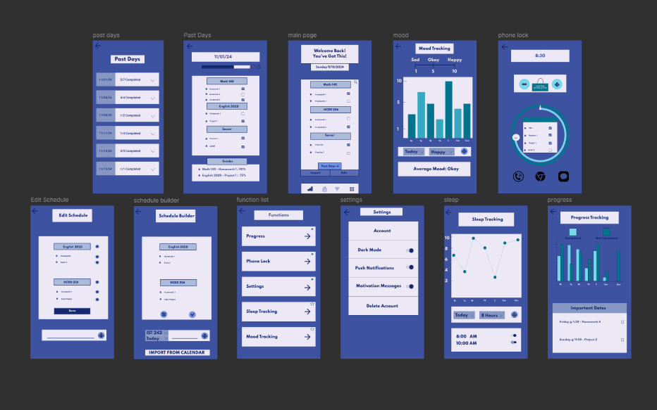
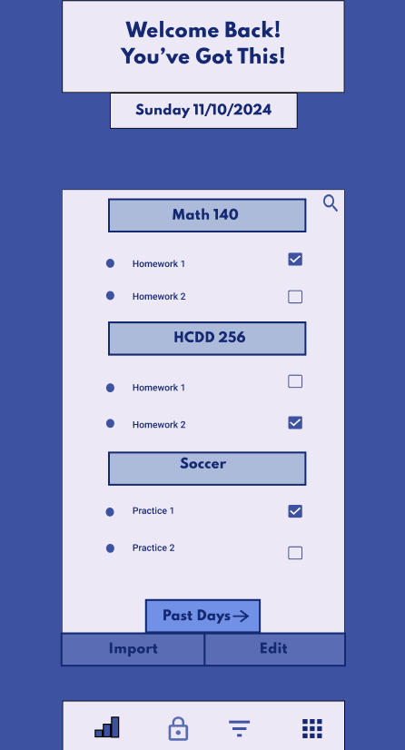
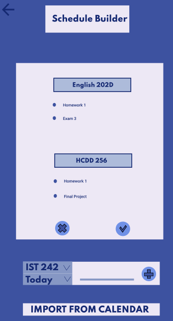
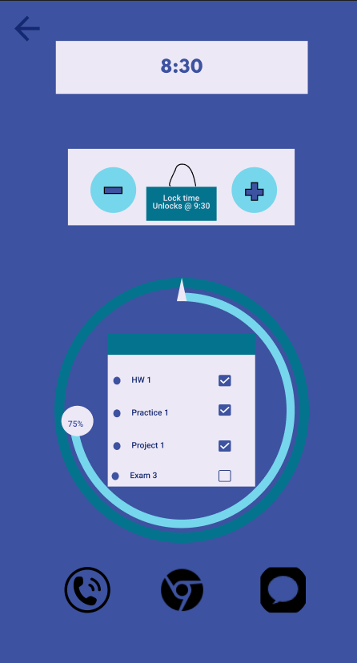
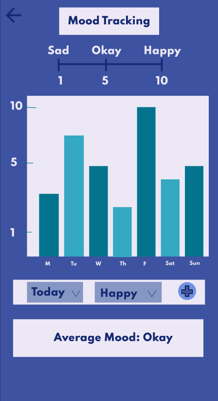
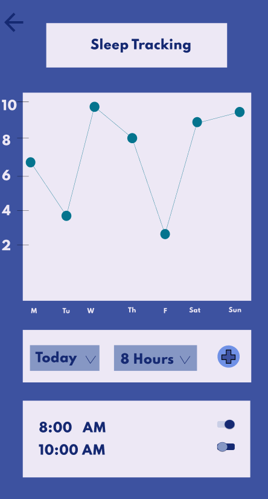

StudentSphere
A student planner focused on productivity, wellbeing, and balance
StudentSphere is a planner/scheduling app designed to help students manage their academic workload and personal wellbeing. The goal of the project is to integrate productivity and mindfulness in a single interface.
Link to project: View StudentSphere on Figma →
Wireframe
Original high-fidelity wireframes created to explore layout, function access, and user flow.
Daily Dashboard
The homepage displays daily tasks, motivation message, and quick access to planner tools.
Schedule Builder
Add tasks manually or import from your class calendar. Custom options help students see all upcoming work in one place.
Focus Lock
Temporarily lock distracting apps like messages and browsers to stay focused while studying. Timer and checklist included.
Mood Tracker
Daily mood logs help students reflect on their emotional wellbeing. Average mood is calculated across the week.
Sleep Tracker
Tracks nightly hours slept with weekday trends. Sleep goals and alarm settings help improve healthy routines.
